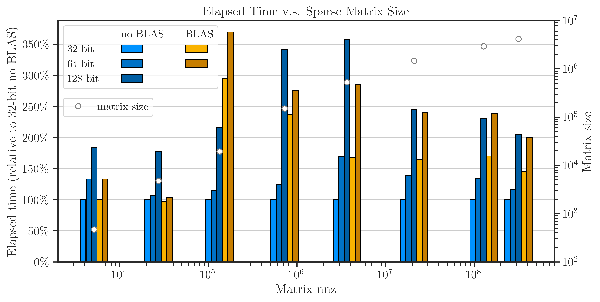

6. Comparison of Performance with and without OpenBLAS#
Almost all computational software are built upon existing numerical libraries for basic linear algebraic subprograms, such as BLAS, OpenBLAS, NVIDIA® cuBLAS, NVIDIA® cuSparse, and Intel® Math Kernel Library, to name a few. imate uses cuBLAS and cuSparse for basic vector and matrix operations on GPU devices. However, for computation on CPU, imate comes with its comes with its own library for basic numerical operations for vector and matrix operations, which supports both dense and sparse matrices. Despite this, imate can also be compiled with OpenBLAS instead of its own library.
Note
OpenBLAS library has three levels of functionalities: level one, two, and three, for vector-vector, matrix-vector, and matrix-matrix operations, respectively. OpenBLAS, however, only supports operations on dense matrices. As such, when imate is compiled with OpenBLAS, it only uses level one functionalities of OpenBLAS for sparse data. For level two and three operations, imate uses its own library.
The following numerical experiment compares the performance and accuracy of imate with and without using OpenBLAS.
6.1. Test Description#
In this numerical experiment, the goal is to compute
where \(\mathbf{A}\) is symmetric and positive-definite. The above quantity is a computationally expensive expression that frequently appears in the Jacobian and Hessian of likelihood functions in machine learning.
6.1.1. Algorithm#
To compute (1), the stochastic Lanczos quadrature (SLQ) algorithm is employed. The complexity of this algorithm is
where \(n\) is the matrix size, \(\mathrm{nnz}(\mathbf{A})\) is the number of nonzero elements of the sparse matrix \(\mathbf{A}\), \(l\) is the number of Lanczos iterations, and \(s\) is the number of Monte-Carlo iterations (see details in imate.traceinv(method=’slq’)). The numerical experiment is performed with \(l=80\) and \(s=200\). The computations were carried out on Intel(R) Xeon(R) CPU E5-2670 v3 with 24 threads.
6.1.2. Benchmark Matrices#
As noted in the above, OpenBLAS only supports dense matrices. However, imate can yet utilize level one functions of OpenBLAS for sparse matrices. In the following tests, both dense and sparse matrices were used.
6.1.2.1. Dense Matrices#
The dense matrix \(\mathbf{A} = \mathbf{B}^{\intercal} \mathbf{B}\) is considered for the test where \(\mathbf{B}\) is a bi-diagonal Toeplitz matrix defined by
The above matrix can be generated by imate.toeplitz() function. In this experiment, \(a = 2\), \(b = 1\), and the matrix size is varied by powers of two, \(n = 2^8, 2^9, \dots, 2^{14}\).
An advantage of using the above matrix is that an analytic formula for (1) for \(n \gg 1\) is known by
where \(q = b/a\). See imate.sample_matrices.toeplitz_traceinv() for details. The above analytic formula is used as the benchmark solution to test the accuracy of the results.
6.1.2.2. Sparse Matrices#
The table below shows the sparse matrices used in the test, which are chosen from SuiteSparse Matrix Collection and are obtained from real applications. The matrices in the table below are all symmetric positive-definite. The number of nonzero elements (nnz) of these matrices increases approximately by a factor of 5 on average and their sparse density remains at the same order of magnitude (except for the first three).
Matrix Name |
Size |
nnz |
Density |
Application |
|---|---|---|---|---|
468 |
5,172 |
0.02 |
Structural Problem |
|
4,800 |
27,520 |
0.001 |
Electromagnetics |
|
19,366 |
134,208 |
0.0003 |
Structural Problem |
|
150,102 |
726,674 |
0.00003 |
Circuit Simulation |
|
525,825 |
3,674,625 |
0.00001 |
Computational Fluid Dynamics |
|
1,465,137 |
21,005,389 |
0.00001 |
Computational Fluid Dynamics |
|
2,911,419 |
127,729,899 |
0.00001 |
Structural Problem |
|
4,147,110 |
329,499,284 |
0.00002 |
Structural Problem |
6.1.3. Arithmetic Types#
The benchmark test also examines the performance and accuracy of imate on various arithmetic types of the matrix data. To this end, each of the above matrices was re-cast into 32-bit, 64-bit, and 128-bit floating point types.
Note
Supporting 128-bit data types is one of the features if imate, which is often not available in numerical libraries, such as OpenBLAS.
6.2. Results for Dense Matrices#
The CPU processing time of the computations are shown in the figure below. The speed of computation with and without using OpenBLAS for \(n < 10^{12}\) shows mixed results. However, at \(n \geq 2^{12}\), the speed of computation without using OpenBLAS is consistently superior by the factor of roughly 1.5 to 2.5.

The accuracy of floating point arithmetic is compared with and without using OpenBLAS in the next figure. The error is obtained by comparing the results with the computation on 128-bit data type without using OpenBLAS as the benchmark. The figure implies that the results of both 32-bit and 64-bit data types with and without openBLAS are almost insignificant.

Recall that the SLQ method is a randomized algorithm, hence, the results are not deterministic. To eliminate the randomness of the outcomes, the numerical experiment is repeated ten times. The standard deviation of the results are shown by the error bars in the figure. However, the values of plot itself is not the average of the results, rather, is the value of the last repeat of the experiment in order to demonstrate the error after 200 Monte-Carlo iterations (and not 10 times 200 iterations).
6.3. Results for Sparse Matrices#
{kind=link}
{kind=link}
6.4. How to Reproduce Results#
To reproduce results of the dense matrices, use
/imate/benchmark/scripts/benchmark_openblas_dense.pyscript.To reproduce results of the sparse matrices, use
/imate/benchmark/scripts/benchmark_speed.pyscript.
Tip
To compile imate using OpenBLAS, export the environment variable:
export USE_CBLAS=1
or set USE_CBLAS=1 in /imate/_definitions/definition.h. By default, USE_CBLAS is set to 0. Then, recompile imate. See Compile from Source.
6.4.1. Run locally#
To reproduce the results for dense matrices without OpenBLAS:
cd /imate/benchmark/scripts python ./benchmark_openblas_dense.py -o False
To reproduce the results for dense matrices with OpenBLAS, first compile imate with OpenBLAS (see above), then run:
cd /imate/benchmark/scripts python ./benchmark_openblas_dense.py -o True
To reproduce the results for sparse matrices either with or without OpenBLAS, first compile imate run:
cd /imate/benchmark/scripts python ./benchmark_openblas_dense.py -o True
6.4.2. Submit Job to Cluster with SLURM#
The SLURM job file for the test on dense matrices is available at
/imate/benchmark/jobfiles/jobfile_benchmark_openblas_dense.sh. Submit the job bycd /imate/benchmark/jobfiles sbatch jobfile_benchmark_openblas_dense.sh
The SLURM job file for the test on sparse matrices is available at
/imate/benchmark/jobfiles/jobfile_benchmark_speed_cpu.sh. Submit the job bycd /imate/benchmark/jobfiles sbatch jobfile_benchmark_speed_cpu.sh